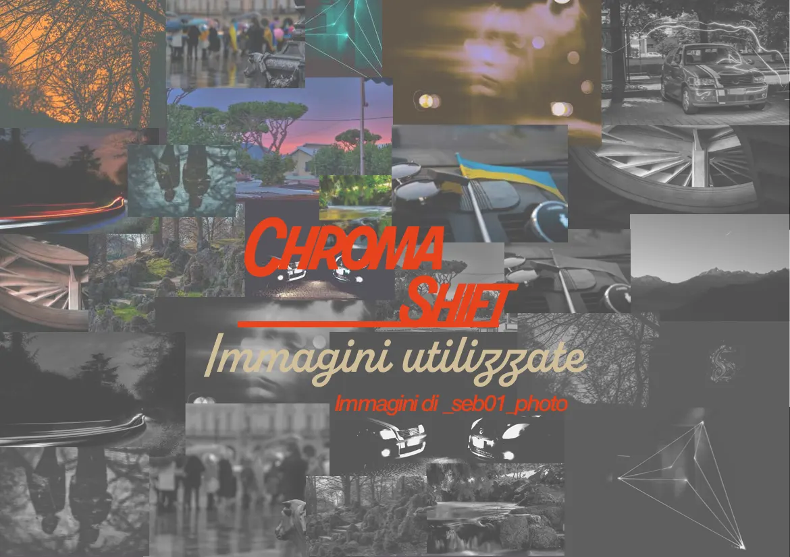
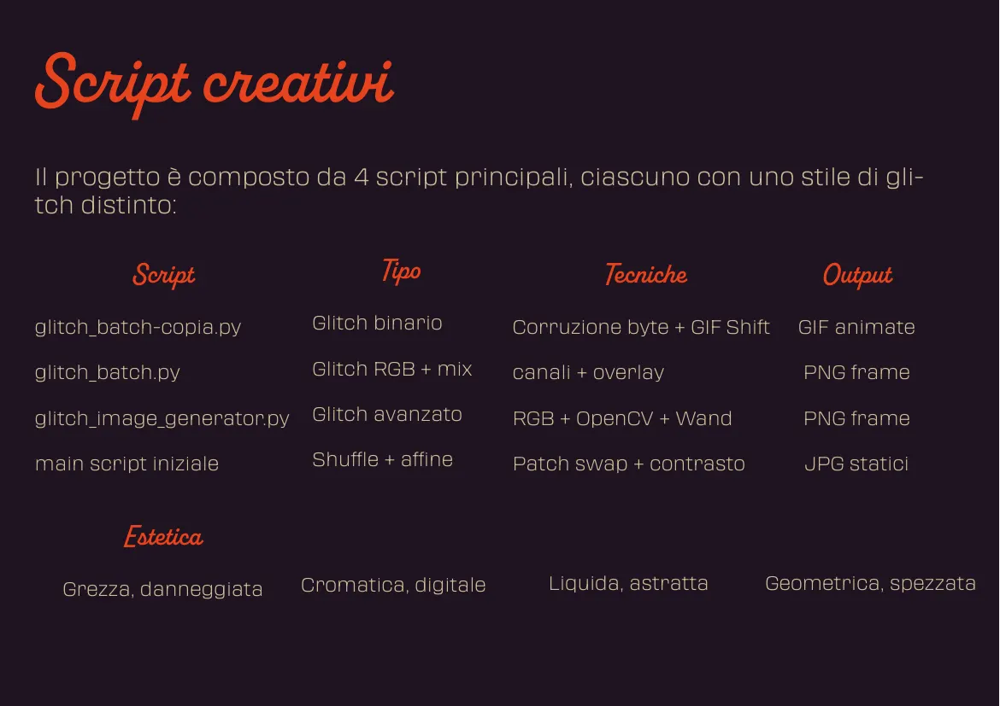
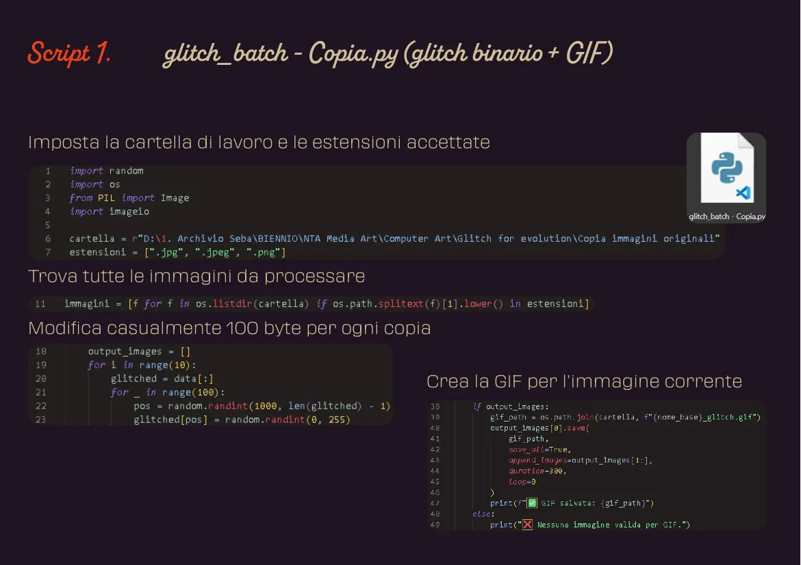
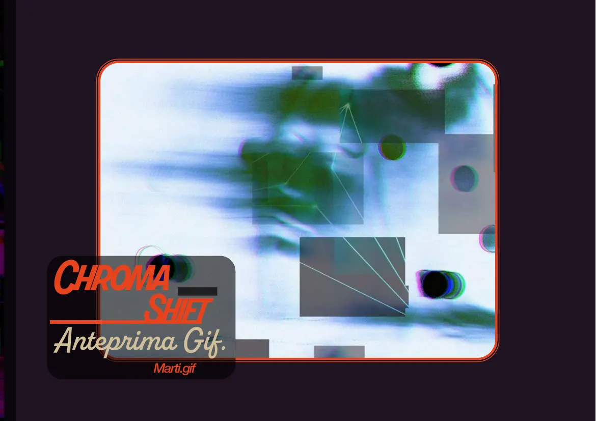
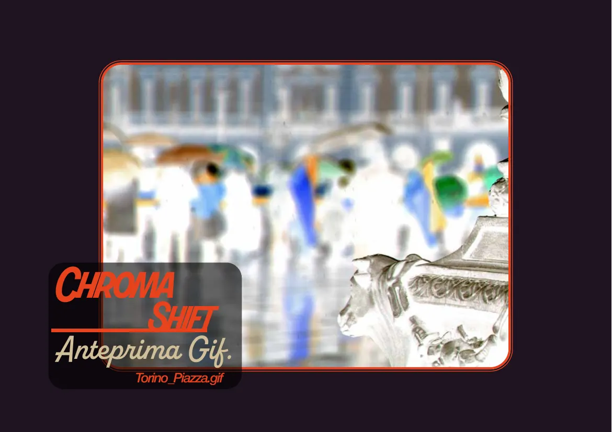
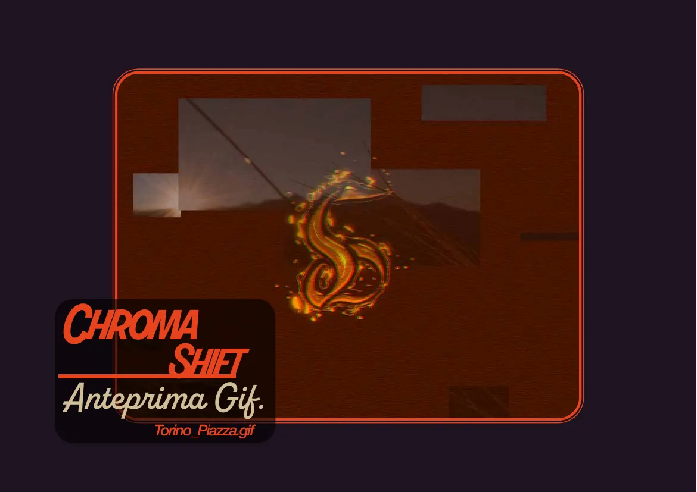
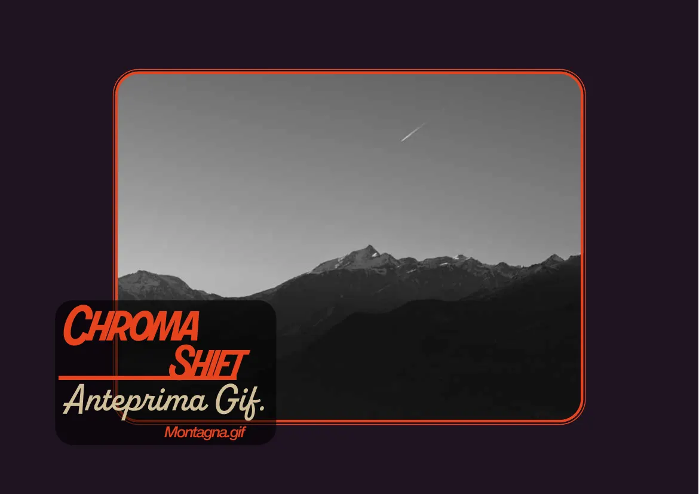
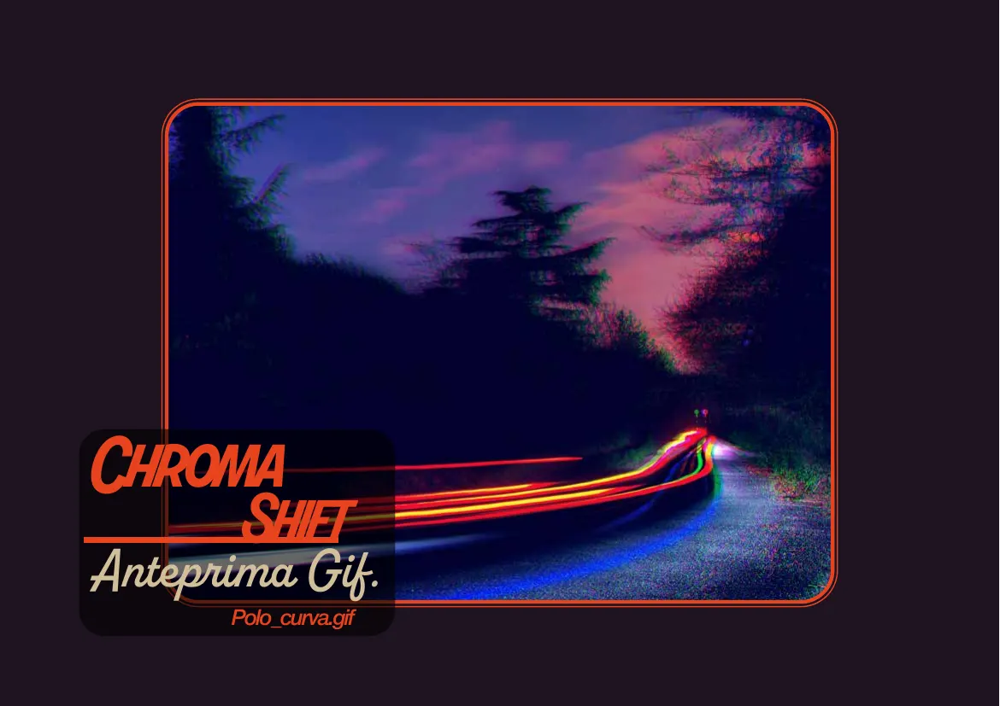
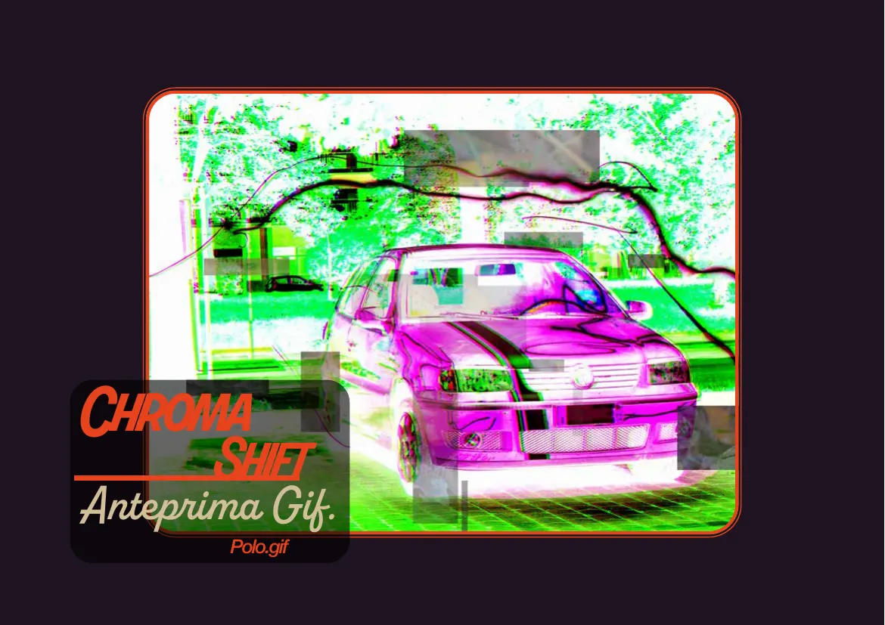

Glitch art generativa · corso di Computer Art, Accademia Albertina · 2024–25
Chroma Shift
Quattro script in Python che rompono apposta le mie fotografie e trasformano gli errori in immagini e GIF animate.
Progetto del corso, con la prof.ssa Cristina Fumagalli.

L'idea
Il glitch è nato come errore ed è diventato un linguaggio visivo. Chroma Shift usa il codice per ricreare l'imperfezione digitale: parto da mie fotografie, a colori e in bianco e nero, e lascio che Python le corrompa. Lo stesso codice dà un risultato diverso su ogni immagine, quindi ogni esito è irripetibile.

Come funziona
Python con Pillow, OpenCV, Wand, NumPy e ImageIO. Ogni script lavora in batch su una cartella di immagini, applica sequenze casuali di trasformazioni e salva dieci frame per immagine, oppure una GIF animata.
- Glitch binario modifica direttamente i byte del file, per un effetto di corruzione estrema.
- Glitch RGB sfasa i canali colore, inverte e aumenta il contrasto, con maschere di fusione.
- Distorsione avanzata sposta le scanline come una TV rotta e aggiunge onde fluide.
- Patch shuffle taglia l'immagine in blocchi e li riordina, per un effetto geometrico e spezzato.


Risultati
Alcune delle GIF animate, mostrate qui come fermo immagine.






Facciamo qualcosa insieme.